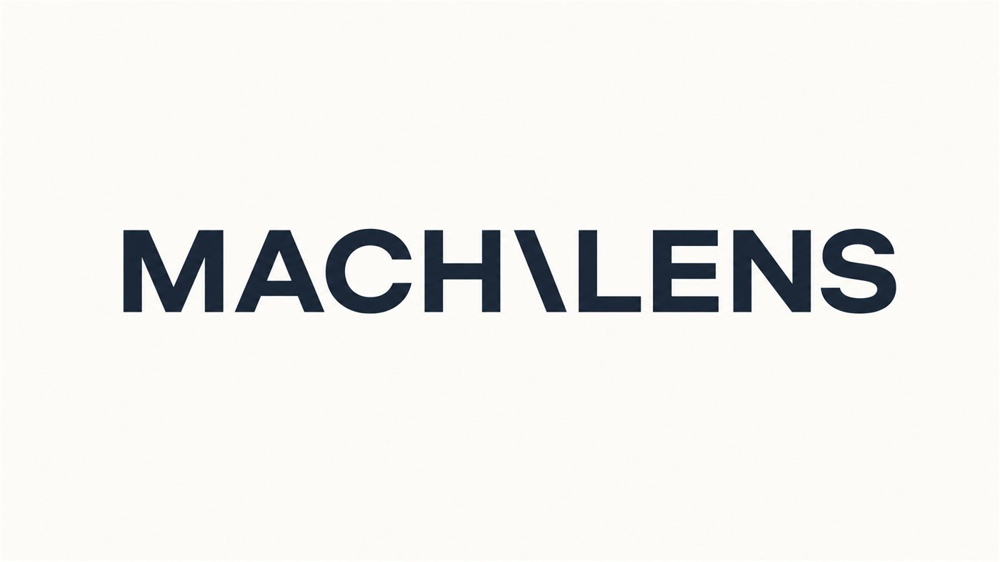
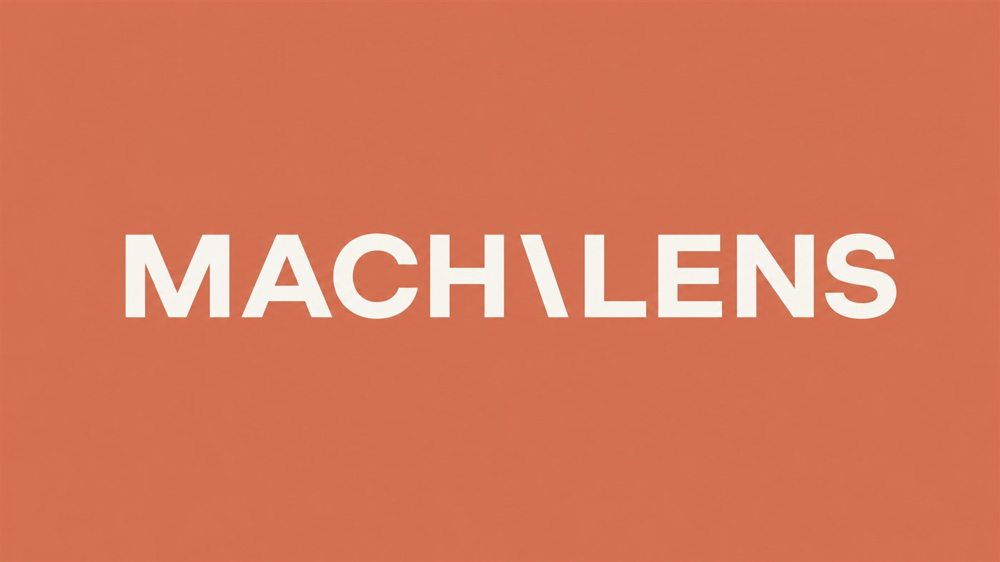
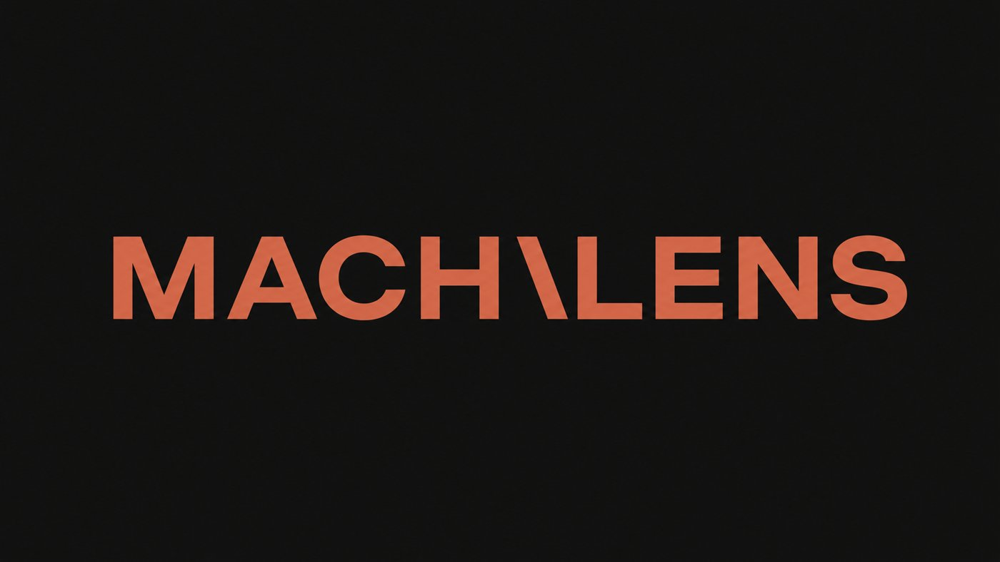

議事録と会議後処理
録音、メモ、決定事項、次アクションの整理までを、担当者が確認しやすい形式へ整えます。

Problem
人手不足、属人化、予算制約。新しいツールを覚える余裕がない現場に必要なのは、IT用語の説明ではなく、いつもの業務にそのまま差し込める手順です。
録音、メモ、決定事項、次アクションの整理までを、担当者が確認しやすい形式へ整えます。
観光案内メール、SNS、広報文を、町のトーンを崩さずに多言語展開します。
公募要領の要点抽出、申請書ドラフト、答弁案の論点整理を下書き化します。
Flagship Course
Excelしか使えない職場でも、明日からAIで月40時間削減を目指す実装型教材。 Claude Web版、Cowork、Claude Codeを混同しないところから始め、自治体・商工会の業務に寄せて解説します。
Services
自治体・商工会向けには、まず小さく一業務で成果を出し、その数字を上司・議会・関係者へ説明できる状態にします。
職員向け勉強会、商工会員向けセミナー、議会説明前の基礎講座を設計します。
¥100,000から¥300,000 / 回
議事録、広報、観光案内、補助金対応など、対象業務を絞って実装します。
¥300,000から / 件
地域のSNS、note、YouTube、LINEをAIで回す投稿生成フローを作ります。
個別見積
Case Study
人手や予算が限られた地域でも、AIを使えば情報発信と業務効率化に取り組めます。 MACHILENSは、地域現場での実装知見を「役所言葉」「商工会の現場感」「地域企業の意思決定」に翻訳します。
1人の担当業務だけで小さく試す
削減時間を数字で記録する
説明資料に落とし込み、組織へ広げる


Company Profile
地方の現場にある知恵、文脈、人の関係性を大切にしながら、AIで業務の詰まりをほどく。 それがまちレンズの役割です。映像制作力とAI運用知見を組み合わせ、伝わる教材と動く仕組みを作ります。
SNS Engine
観光アカウントとは分け、AI×自治体・商工会に特化。最初の100日間はフォロワー数より、検索に残る資産型コンテンツを積み上げます。
1日2から3本。数字ショック、Before/After、プロンプト公開で認知を取る。
週2本。無料記事で検索流入、有料記事で教材の味見と収益化を担う。
週1本。朝霧フィルムズの品質を見せ、Udemyへの信頼を作る。
教材ローンチ前の早期特典、相談受付、購入者サポートへつなぐ。
Next Action
議事録、観光案内メール、広報原稿、補助金要領の読み込み。 小さな成功を作り、数字で説明できる導入へ進めます。